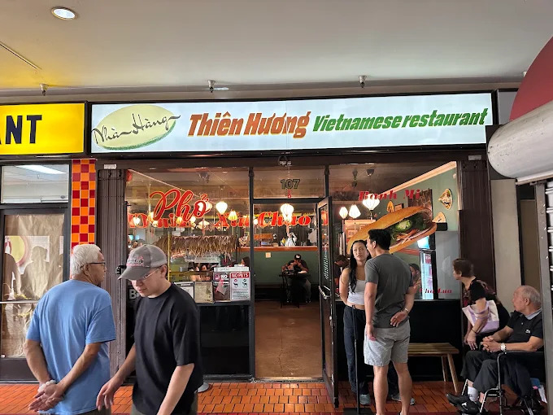
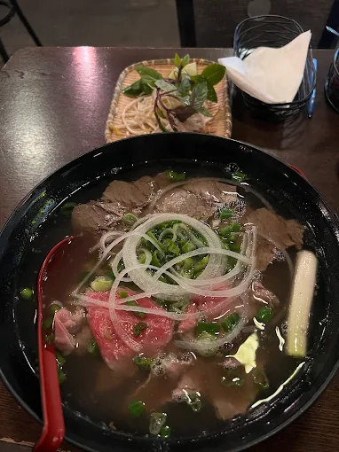

In my personal opinion, phở can only be great or "just ok" with no in between or worse, meaning no matter where you go, you'll have a bowl of decent phở at a minimum. This all depends on which spot you call "yours". The deciding factor for a better phở/spot is the quality of the broth and the ratio of the amount of meat given to rice noodles, compared to other spots you may have tried. My spot, Thien Huong in DTLA, absolutely destroys its competition in every comparison.
Storefront
Click the door to see the inside of the restaurant!
Thien Huong
Located in Chinatown, DTLA, Thien Huong is a family-owned Southern Vietnamese restaurant. They serve a wide range of Viet food ranging from bánh mì, rice plates and phở. It has a small dining room decorated with Vietnamese decor, creating a nice, welcoming and culturally rich environment. Unfortunately for restaurant goers, they seem to have become popular recently, so expect a short wait if you decide to head there. The wait is definitely worth it because the food is extremely delicious and well priced. The phở, of course, is really good, beating out any other phở I've ever had or will have. The broth is clear, rich and hearty, with a great amount of thin steak cuts and rice noodles within the bowl. It is extremely flavorful and very filling. I recommend NOT ordering a large bowl.
My Order

I also like the location of the restaurant as it's inside a plaza right in the middle of Chinatown. Although parking isn't free, you can pay $5 for the whole day next door and explore the area after you eat at Thien Huong. Sometimes eating phở and walking around Chinatown's vendor stores is a great way to spend a whole afternoon. I sometimes also just like eating phở and getting ice cream from "Scoops," which is in the same plaza.